CODING AGENTS AS PIXEL WORLD MODELS
traex/DeepSeek-V4.1-Flash · dynamic_spatial_relationship_0010
点击播放 · 原生 RGB 像素
逐轮保存的候选
回放视频、检查图与代码变化。
每份候选均可单独播放。实际图片检查记录在下方工具轨迹中。
候选 01播放与检查图
点击播放 · 原生 RGB 像素

展开代码变化
--- 上一保存版本
+++ 本次保存版本
@@ -0,0 +1,615 @@
+from __future__ import annotations
+
+import math
+from pathlib import Path
+
+import cv2
+import numpy as np
+from PIL import Image, ImageDraw, ImageFilter
+
+import artifact_io
+
+
+WIDTH = 256
+HEIGHT = 144
+FRAMES = 20
+FPS = 4.0
+SCALE = 4
+W = WIDTH * SCALE
+H = HEIGHT * SCALE
+
+
+def rgb(hex_color: str) -> tuple[int, int, int]:
+ value = hex_color.lstrip("#")
+ return tuple(int(value[i : i + 2], 16) for i in (0, 2, 4))
+
+
+def mix(a: tuple[int, int, int], b: tuple[int, int, int], t: float) -> tuple[int, int, int]:
+ return tuple(round(x + (y - x) * t) for x, y in zip(a, b))
+
+
+def make_background() -> Image.Image:
+ yy, xx = np.mgrid[0:H, 0:W]
+ floor_y = 92 * SCALE
+ wall_top = np.array(rgb("#496e6b"), dtype=np.float32)
+ wall_bottom = np.array(rgb("#a5b09a"), dtype=np.float32)
+ floor_top = np.array(rgb("#c78750"), dtype=np.float32)
+ floor_bottom = np.array(rgb("#7b4a35"), dtype=np.float32)
+
+ image = np.empty((H, W, 3), dtype=np.float32)
+ wall_t = np.clip(yy / floor_y, 0.0, 1.0)[..., None]
+ floor_t = np.clip((yy - floor_y) / max(1, H - floor_y), 0.0, 1.0)[..., None]
+ image[:] = wall_top + (wall_bottom - wall_top) * wall_t
+ image[floor_y:] = floor_top + (floor_bottom - floor_top) * floor_t[floor_y:]
+
+ rng = np.random.default_rng(17)
+ coarse = rng.normal(0.0, 1.0, (H // 16 + 2, W // 16 + 2))
+ noise = cv2.resize(coarse, (W, H), interpolation=cv2.INTER_CUBIC)
+ noise = np.clip(noise, -2.2, 2.2)[..., None]
+ image = np.clip(image + noise, 0, 255).astype(np.uint8)
+ base = Image.fromarray(image).convert("RGBA")
+ draw = ImageDraw.Draw(base, "RGBA")
+
+ # Soft window light, kept subtle so the cat remains the focal point.
+ light = Image.new("RGBA", (W, H), (0, 0, 0, 0))
+ ld = ImageDraw.Draw(light, "RGBA")
+ ld.polygon(
+ [
+ (2 * SCALE, 10 * SCALE),
+ (53 * SCALE, 8 * SCALE),
+ (128 * SCALE, 92 * SCALE),
+ (66 * SCALE, 92 * SCALE),
+ ],
+ fill=(255, 226, 171, 28),
+ )
+ light = light.filter(ImageFilter.GaussianBlur(12 * SCALE))
+ base = Image.alpha_composite(base, light)
+ draw = ImageDraw.Draw(base, "RGBA")
+
+ # Floor boards and their dark seams.
+ seam = rgb("#68402f")
+ for x in (-26, 33, 94, 157, 219, 283):
+ draw.line(
+ [(x * SCALE, floor_y), ((x - 18) * SCALE, H)],
+ fill=(*seam, 105),
+ width=2 * SCALE,
+ )
+ for y in (104, 121, 139):
+ draw.line([(0, y * SCALE), (W, y * SCALE)], fill=(*seam, 45), width=1 * SCALE)
+
+ # Window with a muted garden beyond it.
+ wx0, wy0, wx1, wy1 = 3, 12, 51, 66
+ draw.rounded_rectangle(
+ (wx0 * SCALE, wy0 * SCALE, wx1 * SCALE, wy1 * SCALE),
+ radius=2 * SCALE,
+ fill=(*rgb("#d9d1b6"), 255),
+ outline=(*rgb("#3e5049"), 255),
+ width=2 * SCALE,
+ )
+ glass = Image.new("RGBA", (W, H), (0, 0, 0, 0))
+ gd = ImageDraw.Draw(glass, "RGBA")
+ gd.rectangle(
+ ((wx0 + 3) * SCALE, (wy0 + 3) * SCALE, (wx1 - 3) * SCALE, (wy1 - 3) * SCALE),
+ fill=(190, 220, 211, 255),
+ )
+ for cx, cy, r, color in [
+ (12, 48, 18, "#6f9474"),
+ (27, 49, 21, "#537b60"),
+ (43, 46, 18, "#799b6f"),
+ (7, 29, 13, "#87a58a"),
+ ]:
+ gd.ellipse(
+ ((cx - r) * SCALE, (cy - r) * SCALE, (cx + r) * SCALE, (cy + r) * SCALE),
+ fill=(*rgb(color), 235),
+ )
+ gd.rectangle((3 * SCALE, 62 * SCALE, 51 * SCALE, 70 * SCALE), fill=(113, 95, 71, 255))
+ mask = Image.new("L", (W, H), 0)
+ md = ImageDraw.Draw(mask)
+ md.rectangle(
+ ((wx0 + 3) * SCALE, (wy0 + 3) * SCALE, (wx1 - 3) * SCALE, (wy1 - 3) * SCALE),
+ fill=255,
+ )
+ base.paste(glass, (0, 0), mask)
+ draw = ImageDraw.Draw(base, "RGBA")
+ draw.line(
+ [(27 * SCALE, (wy0 + 3) * SCALE), (27 * SCALE, (wy1 - 3) * SCALE)],
+ fill=(*rgb("#d9d1b6"), 255),
+ width=2 * SCALE,
+ )
+ draw.line(
+ [((wx0 + 3) * SCALE, 38 * SCALE), ((wx1 - 3) * SCALE, 38 * SCALE)],
+ fill=(*rgb("#d9d1b6"), 255),
+ width=2 * SCALE,
+ )
+
+ # A tiny framed botanical print balances the window.
+ fx0, fy0, fx1, fy1 = 203, 15, 241, 49
+ draw.rounded_rectangle(
+ (fx0 * SCALE, fy0 * SCALE, fx1 * SCALE, fy1 * SCALE),
+ radius=1 * SCALE,
+ fill=(*rgb("#6c4430"), 255),
+ outline=(*rgb("#342f28"), 255),
+ width=1 * SCALE,
+ )
+ draw.rectangle(
+ ((fx0 + 3) * SCALE, (fy0 + 3) * SCALE, (fx1 - 3) * SCALE, (fy1 - 3) * SCALE),
+ fill=(*rgb("#e0d4b7"), 255),
+ )
+ draw.line(
+ [(221 * SCALE, 45 * SCALE), (222 * SCALE, 25 * SCALE), (231 * SCALE, 19 * SCALE)],
+ fill=(*rgb("#496b4f"), 255),
+ width=1 * SCALE,
+ )
+ for lx, ly, rx, ry in [(216, 39, 7, 3), (229, 34, 6, 3), (231, 26, 5, 3)]:
+ draw.ellipse(
+ ((lx - rx) * SCALE, (ly - ry) * SCALE, (lx + rx) * SCALE, (ly + ry) * SCALE),
+ fill=(*rgb("#638566"), 255),
+ )
+
+ # Broad shadow beneath the table establishes depth.
+ under = Image.new("RGBA", (W, H), (0, 0, 0, 0))
+ ud = ImageDraw.Draw(under, "RGBA")
+ ud.ellipse((18 * SCALE, 91 * SCALE, 242 * SCALE, 141 * SCALE), fill=(40, 23, 18, 90))
+ under = under.filter(ImageFilter.GaussianBlur(8 * SCALE))
+ base = Image.alpha_composite(base, under)
+ draw = ImageDraw.Draw(base, "RGBA")
+
+ # Table legs are tapered and have a lit edge.
+ for x0, x1 in [(29, 40), (224, 235)]:
+ draw.polygon(
+ [
+ (x0 * SCALE, 88 * SCALE),
+ (x1 * SCALE, 88 * SCALE),
+ ((x1 - 1) * SCALE, 138 * SCALE),
+ ((x0 + 2) * SCALE, 138 * SCALE),
+ ],
+ fill=(*rgb("#5c3527"), 255),
+ outline=(*rgb("#38251e"), 255),
+ )
+ draw.line(
+ [((x0 + 2) * SCALE, 90 * SCALE), ((x0 + 3) * SCALE, 137 * SCALE)],
+ fill=(*rgb("#9a6040"), 255),
+ width=2 * SCALE,
+ )
+ draw.ellipse(
+ ((x0 - 3) * SCALE, 135 * SCALE, (x1 + 3) * SCALE, 141 * SCALE),
+ fill=(*rgb("#42291f"), 150),
+ )
+
+ # Tabletop and apron.
+ draw.polygon(
+ [
+ (18 * SCALE, 76 * SCALE),
+ (237 * SCALE, 76 * SCALE),
+ (246 * SCALE, 86 * SCALE),
+ (9 * SCALE, 86 * SCALE),
+ ],
+ fill=(*rgb("#9b5f3b"), 255),
+ outline=(*rgb("#4a2d22"), 255),
+ )
+ draw.polygon(
+ [
+ (9 * SCALE, 86 * SCALE),
+ (246 * SCALE, 86 * SCALE),
+ (243 * SCALE, 93 * SCALE),
+ (12 * SCALE, 93 * SCALE),
+ ],
+ fill=(*rgb("#6b3d2b"), 255),
+ outline=(*rgb("#3f281f"), 255),
+ )
+ draw.line(
+ [(18 * SCALE, 77 * SCALE), (238 * SCALE, 77 * SCALE)],
+ fill=(*rgb("#d29561"), 220),
+ width=2 * SCALE,
+ )
+ draw.line(
+ [(12 * SCALE, 91 * SCALE), (243 * SCALE, 91 * SCALE)],
+ fill=(*rgb("#4f3025"), 210),
+ width=2 * SCALE,
+ )
+ for i, y in enumerate((80, 82.5, 84.5)):
+ offset = (i * 23) % 31
+ draw.line(
+ [((26 + offset) * SCALE, y * SCALE), ((108 + offset) * SCALE, (y + 0.5) * SCALE)],
+ fill=(*rgb("#7b472f"), 105),
+ width=1 * SCALE,
+ )
+ draw.line(
+ [((143 + offset) * SCALE, y * SCALE), ((225 + offset / 2) * SCALE, (y + 0.3) * SCALE)],
+ fill=(*rgb("#c08152"), 70),
+ width=1 * SCALE,
+ )
+
+ # Ceramic bowl on the far side of the table.
+ bx, by = 197, 72
+ draw.ellipse(
+ ((bx - 14) * SCALE, (by - 3) * SCALE, (bx + 14) * SCALE, (by + 5) * SCALE),
+ fill=(*rgb("#543b32"), 95),
+ )
+ draw.polygon(
+ [
+ ((bx - 12) * SCALE, by * SCALE),
+ ((bx + 12) * SCALE, by * SCALE),
+ ((bx + 8) * SCALE, (by + 8) * SCALE),
+ ((bx - 8) * SCALE, (by + 8) * SCALE),
+ ],
+ fill=(*rgb("#4c8980"), 255),
+ outline=(*rgb("#294d49"), 255),
+ )
+ draw.ellipse(
+ ((bx - 12) * SCALE, (by - 2) * SCALE, (bx + 12) * SCALE, (by + 4) * SCALE),
+ fill=(*rgb("#75aaa0"), 255),
+ outline=(*rgb("#294d49"), 255),
+ )
+ draw.ellipse(
+ ((bx - 8) * SCALE, (by - 1) * SCALE, (bx + 8) * SCALE, (by + 2) * SCALE),
+ fill=(*rgb("#3f726c"), 255),
+ )
+ for ox in (-4, 3):
+ draw.ellipse(
+ ((bx + ox - 3) * SCALE, (by - 3) * SCALE, (bx + ox + 3) * SCALE, (by + 2) * SCALE),
+ fill=(*rgb("#df8b3d"), 255),
+ outline=(*rgb("#7c4428"), 180),
+ )
+
+ return base
+
+
+def rotate_points(points, origin, angle):
+ ox, oy = origin
+ c, s = math.cos(angle), math.sin(angle)
+ out = []
+ for x, y in points:
+ out.append((ox + (x - ox) * c - (y - oy) * s, oy + (x - ox) * s + (y - oy) * c))
+ return out
+
+
+def ellipse_polygon(cx, cy, rx, ry, angle=0.0, count=40):
+ points = []
+ c, s = math.cos(angle), math.sin(angle)
+ for i in range(count):
+ a = math.tau * i / count
+ x, y = rx * math.cos(a), ry * math.sin(a)
+ points.append((cx + x * c - y * s, cy + x * s + y * c))
+ return points
+
+
+def draw_ellipse(draw, cx, cy, rx, ry, fill, outline=None, width=0, angle=0.0):
+ pts = ellipse_polygon(cx, cy, rx, ry, angle)
+ draw.polygon(pts, fill=fill)
+ if outline is not None and width > 0:
+ draw.line(pts + [pts[0]], fill=outline, width=round(width), joint="curve")
+
+
+def draw_capsule(draw, p0, p1, radius, fill, outline, outline_width):
+ outer = round(2 * radius + 2 * outline_width)
+ inner = round(2 * radius)
+ draw.line([p0, p1], fill=outline, width=outer)
+ draw.line([p0, p1], fill=fill, width=inner)
+ for p in (p0, p1):
+ draw.ellipse(
+ (p[0] - radius - outline_width, p[1] - radius - outline_width,
+ p[0] + radius + outline_width, p[1] + radius + outline_width),
+ fill=outline,
+ )
+ draw.ellipse(
+ (p[0] - radius, p[1] - radius, p[0] + radius, p[1] + radius),
+ fill=fill,
+ )
+
+
+def cubic_bezier(p0, p1, p2, p3, steps=48):
+ points = []
+ for i in range(steps + 1):
+ t = i / steps
+ u = 1.0 - t
+ x = u**3 * p0[0] + 3 * u * u * t * p1[0] + 3 * u * t * t * p2[0] + t**3 * p3[0]
+ y = u**3 * p0[1] + 3 * u * u * t * p1[1] + 3 * u * t * t * p2[1] + t**3 * p3[1]
+ points.append((x, y))
+ return points
+
+
+def draw_cat(base: Image.Image, x: float, y: float, angle: float, pose: str, phase: float) -> None:
+ layer = Image.new("RGBA", (W, H), (0, 0, 0, 0))
+ draw = ImageDraw.Draw(layer, "RGBA")
+ root = (x * SCALE, y * SCALE)
+ c, s = math.cos(angle), math.sin(angle)
+
+ def tp(p):
+ lx, ly = p
+ return (
+ root[0] + (lx * c - ly * s) * SCALE,
+ root[1] + (lx * s + ly * c) * SCALE,
+ )
+
+ def tpoints(points):
+ return [tp(p) for p in points]
+
+ outline = (*rgb("#43271e"), 255)
+ orange = (*rgb("#d98240"), 255)
+ orange_light = (*rgb("#efa766"), 255)
+ orange_dark = (*rgb("#a95c32"), 255)
+ cream = (*rgb("#f0d6aa"), 255)
+ pink = (*rgb("#d98b83"), 255)
+ stripe = (*rgb("#713b28"), 255)
+ ow = 1.8 * SCALE
+
+ # Tail: outline, orange core, and dark tabby rings.
+ sway = 1.6 * math.sin(phase * 0.55)
+ if pose in {"idle", "crouch"}:
+ tail_pts = cubic_bezier((-14, -2), (-29, -3), (-32 + sway, -24), (-13 + sway, -24))
+ elif pose in {"leap", "land"}:
+ tail_pts = cubic_bezier((-14, -1), (-29, -10), (-39, -15 + sway), (-40, -3 + sway))
+ else:
+ tail_pts = cubic_bezier((-14, -1), (-28, -7), (-38, -6 + sway), (-42, -15 + sway))
+ tail_draw = tpoints(tail_pts)
+ draw.line(tail_draw, fill=outline, width=round(6.8 * SCALE), joint="curve")
+ draw.line(tail_draw, fill=orange, width=round(3.8 * SCALE), joint="curve")
+ for frac in (0.58, 0.72, 0.86):
+ idx = min(len(tail_pts) - 2, max(1, round(frac * (len(tail_pts) - 1))))
+ p = tail_pts[idx]
+ q = tail_pts[min(len(tail_pts) - 1, idx + 1)]
+ dx, dy = q[0] - p[0], q[1] - p[1]
+ length = max(0.001, math.hypot(dx, dy))
+ nx, ny = -dy / length, dx / length
+ ring = [(p[0] - nx * 2.3, p[1] - ny * 2.3), (p[0] + nx * 2.3, p[1] + ny * 2.3)]
+ draw.line(tpoints(ring), fill=stripe, width=round(2.0 * SCALE))
+
+ # Build leg targets from the motion phase.
+ if pose == "idle":
+ legs = [
+ (-11, 3, -11, 13.0, "far", 0.0),
+ (8, 3, 9, 13.0, "far", 0.0),
+ (-8, 4, -8.5, 14.0, "near", 0.0),
+ (11, 4, 11.5, 14.0, "near", 0.0),
+ ]
+ elif pose == "crouch":
+ legs = [
+ (-11, 4, -13, 12.0, "far", 0.0),
+ (8, 4, 10, 12.0, "far", 0.0),
+ (-8, 5, -11, 13.0, "near", 0.0),
+ (11, 5, 13, 13.0, "near", 0.0),
+ ]
+ elif pose == "leap":
+ legs = [
+ (-11, 4, -17, 9.0, "far", 0.0),
+ (8, 4, 14, 8.0, "far", 0.0),
+ (-8, 5, -12, 15.0, "near", 0.0),
+ (11, 5, 16, 14.0, "near", 0.0),
+ ]
+ elif pose == "land":
+ legs = [
+ (-11, 4, -13, 14.0, "far", 0.0),
+ (8, 4, 12, 14.0, "far", 0.0),
+ (-8, 5, -9, 15.0, "near", 0.0),
+ (11, 5, 13, 15.0, "near", 0.0),
+ ]
+ else:
+ legs = []
+ for hip_x, hip_y, kind, offset, stride in [
+ (-11, 3, "far", 2.0, 4.5),
+ (8, 3, "far", 3.2, 4.5),
+ (-8, 4, "near", 0.1, 6.0),
+ (11, 4, "near", 1.3, 6.0),
+ ]:
+ leg_phase = phase + offset
+ foot_x = hip_x + stride * math.sin(leg_phase)
+ lift = max(0.0, math.cos(leg_phase)) * 3.6
+ foot_y = 14.2 - lift
+ legs.append((hip_x, hip_y, foot_x, foot_y, kind, leg_phase))
+
+ def leg_points(hip_x, hip_y, foot_x, foot_y, kind, leg_phase):
+ knee_forward = 1.2 if hip_x > 0 else -1.8
+ knee = (
+ (hip_x + foot_x) * 0.5 + knee_forward,
+ (hip_y + foot_y) * 0.5 - 1.6 + 0.6 * math.sin(leg_phase),
+ )
+ return tp((hip_x, hip_y)), tp(knee), tp((foot_x, foot_y))
+
+ # Far-side legs sit behind the torso.
+ for hip_x, hip_y, foot_x, foot_y, kind, leg_phase in legs:
+ if kind != "far":
+ continue
+ hip, knee, foot = leg_points(hip_x, hip_y, foot_x, foot_y, kind, leg_phase)
+ draw_capsule(draw, hip, knee, 2.3 * SCALE, orange_dark, outline, ow)
+ draw_capsule(draw, knee, foot, 1.9 * SCALE, orange_dark, outline, ow)
+ draw_ellipse(draw, foot[0], foot[1], 2.5 * SCALE, 1.7 * SCALE, (*rgb("#d7bd95"), 255), outline, ow)
+
+ # Torso and shoulder/haunch masses.
+ body_p0, body_p1 = tp((-11, 0)), tp((10, 0))
+ draw_capsule(draw, body_p0, body_p1, 10.0 * SCALE, orange, outline, ow)
+ for cx, cy, rx, ry in [(-11, 0, 12.5, 10.5), (8, 1, 11.5, 9.5)]:
+ pts = tpoints(ellipse_polygon(cx, cy, rx, ry, angle))
+ draw.polygon(pts, fill=orange)
+ draw.line(pts + [pts[0]], fill=outline, width=round(ow), joint="curve")
+
+ # Belly highlight and soft back light.
+ belly = tpoints(ellipse_polygon(3, 6.0, 12.5, 4.4, angle))
+ draw.polygon(belly, fill=(*rgb("#e7a46a"), 205))
+ back_light = tpoints(ellipse_polygon(-4, -6.5, 15.0, 3.2, angle))
+ draw.polygon(back_light, fill=(*rgb("#efac6a"), 145))
+
+ # Tabby stripes across the back.
+ for bx in (-8.0, -2.0, 4.0):
+ stripe_curve = cubic_bezier((bx - 1.5, -8.2), (bx, -10.0), (bx + 2.0, -9.2), (bx + 3.0, -6.2), 10)
+ draw.line(tpoints(stripe_curve), fill=stripe, width=round(1.8 * SCALE), joint="curve")
+
+ # Near-side legs.
+ for hip_x, hip_y, foot_x, foot_y, kind, leg_phase in legs:
+ if kind != "near":
+ continue
+ hip, knee, foot = leg_points(hip_x, hip_y, foot_x, foot_y, kind, leg_phase)
+ draw_capsule(draw, hip, knee, 2.5 * SCALE, orange, outline, ow)
+ draw_capsule(draw, knee, foot, 2.0 * SCALE, orange_light, outline, ow)
+ draw_ellipse(draw, foot[0], foot[1], 2.8 * SCALE, 1.9 * SCALE, cream, outline, ow)
+
+ # Cream chest patch.
+ chest = tpoints(ellipse_polygon(12.5, 3.5, 7.0, 7.2, angle))
+ draw.polygon(chest, fill=cream)
+
+ # Ears behind the head.
+ for pts, inner_pts in [
+ ([(-3.0, -13.0), (1.0, -22.0), (7.0, -12.0)], [(-0.5, -14.0), (1.7, -19.5), (4.8, -13.5)]),
+ ([(5.0, -13.0), (10.0, -21.0), (14.0, -10.0)], [(7.0, -13.3), (10.0, -18.5), (12.2, -11.8)]),
+ ]:
+ ear_center = (18.0, -5.0)
+ ear_world = []
+ inner_world = []
+ for ex, ey in pts:
+ ear_world.append((ex + ear_center[0], ey + ear_center[1]))
+ for ex, ey in inner_pts:
+ inner_world.append((ex + ear_center[0], ey + ear_center[1]))
+ draw.polygon(tpoints(ear_world), fill=orange, outline=outline)
+ draw.polygon(tpoints(inner_world), fill=pink)
+
+ # Head, muzzle, nose, eye, and whiskers.
+ hx, hy = 18.0, -6.0
+ head = tpoints(ellipse_polygon(hx, hy, 9.4, 8.7, angle))
+ draw.polygon(head, fill=orange_light)
+ draw.line(head + [head[0]], fill=outline, width=round(ow), joint="curve")
+ muzzle = tpoints(ellipse_polygon(hx + 5.5, hy + 3.2, 6.2, 4.2, angle))
+ draw.polygon(muzzle, fill=cream)
+ cheek = tpoints(ellipse_polygon(hx + 1.5, hy + 3.0, 4.2, 4.0, angle))
+ draw.polygon(cheek, fill=(*rgb("#f3c889"), 220))
+
+ # Forehead stripes.
+ for offset in (-2.0, 1.0, 4.0):
+ pts = cubic_bezier(
+ (hx + offset - 1.0, hy - 8.0),
+ (hx + offset, hy - 5.2),
+ (hx + offset + 0.8, hy - 3.8),
+ (hx + offset + 1.6, hy - 2.5),
+ 8,
+ )
+ draw.line(tpoints(pts), fill=stripe, width=round(1.5 * SCALE), joint="curve")
+
+ eye_c = tp((hx + 4.0, hy - 1.7))
+ draw_ellipse(
+ draw, eye_c[0], eye_c[1], 2.7 * SCALE, 3.0 * SCALE,
+ (*rgb("#c8d982"), 255), outline, 1.1 * SCALE, angle,
+ )
+ pupil = tp((hx + 4.7, hy - 1.6))
+ draw_ellipse(draw, pupil[0], pupil[1], 0.8 * SCALE, 2.4 * SCALE, (*rgb("#18211b"), 255), angle=angle)
+ glint = tp((hx + 4.3, hy - 2.5))
+ draw_ellipse(draw, glint[0], glint[1], 0.55 * SCALE, 0.65 * SCALE, (255, 255, 236, 255), angle=angle)
+
+ nose = tpoints([(hx + 10.0, hy + 1.3), (hx + 12.4, hy + 2.3), (hx + 9.8, hy + 3.6)])
+ draw.polygon(nose, fill=pink, outline=outline)
+ draw.line(tpoints([(hx + 11.0, hy + 3.4), (hx + 11.0, hy + 5.0)]), fill=outline, width=round(0.9 * SCALE))
+ draw.line(
+ tpoints([(hx + 9.8, hy + 5.0), (hx + 7.0, hy + 5.8), (hx + 5.5, hy + 4.8)]),
+ fill=outline,
+ width=round(0.9 * SCALE),
+ joint="curve",
+ )
+ draw.line(
+ tpoints([(hx + 9.8, hy + 5.0), (hx + 12.0, hy + 6.0), (hx + 14.0, hy + 4.8)]),
+ fill=outline,
+ width=round(0.9 * SCALE),
+ joint="curve",
+ )
+ for dy in (-2.2, 1.0, 3.5):
+ draw.line(
+ tpoints([(hx + 10.5, hy + 2.5), (hx + 19.0, hy + dy)]),
+ fill=(*rgb("#f5e2bd"), 220),
+ width=round(0.65 * SCALE),
+ )
+
+ base.alpha_composite(layer)
+
+
+def add_shadow(base: Image.Image, cx: float, cy: float, rx: float, ry: float, alpha: int) -> None:
+ shadow = Image.new("RGBA", (W, H), (0, 0, 0, 0))
+ sd = ImageDraw.Draw(shadow, "RGBA")
+ sd.ellipse(
+ ((cx - rx) * SCALE, (cy - ry) * SCALE, (cx + rx) * SCALE, (cy + ry) * SCALE),
+ fill=(43, 25, 20, alpha),
+ )
+ shadow = shadow.filter(ImageFilter.GaussianBlur(2.4 * SCALE))
+ base.alpha_composite(shadow)
+
+
+def cat_state(index: int):
+ if index <= 3:
+ x = [87.5, 88.2, 89.0, 92.5][index]
+ return x, 61.0, -0.02, "idle", 0.6 + index * 0.65
+ if index <= 6:
+ step = index - 4
+ return [104.0, 115.0, 126.0][step], [62.0, 61.2, 62.0][step], 0.03, "run", 0.4 + step * 1.55
+ if index <= 10:
+ step = index - 7
+ return (
+ [136.0, 146.0, 155.0, 164.0][step],
+ [70.0, 83.0, 97.0, 110.5][step],
+ [0.20, 0.24, 0.18, 0.10][step],
+ "leap",
+ 0.8 + step * 0.9,
+ )
+ if index == 11:
+ return 172.0, 121.0, 0.02, "land", 1.8
+ step = index - 12
+ return (
+ 181.0 + step * 4.55,
+ 122.4 + 0.9 * math.sin(step * 1.35),
+ 0.0,
+ "run",
+ 0.2 + step * 1.35,
+ )
+
+
+def finish_frame(base: Image.Image, index: int) -> np.ndarray:
+ frame = np.asarray(base.convert("RGB"), dtype=np.float32)
+ yy, xx = np.mgrid[0:H, 0:W]
+ nx = (xx - W / 2) / (W / 2)
+ ny = (yy - H / 2) / (H / 2)
+ vignette = np.clip(1.0 - 0.13 * (nx * nx + 0.7 * ny * ny), 0.78, 1.0)
+ frame *= vignette[..., None]
+
+ # Stable, very light texture keeps the vector scene from looking flat.
+ rng = np.random.default_rng(1000 + index)
+ grain = rng.normal(0.0, 1.25, (H, W, 1))
+ frame = np.clip(frame + grain, 0, 255).astype(np.uint8)
+ small = cv2.resize(frame, (WIDTH, HEIGHT), interpolation=cv2.INTER_AREA)
+ return small
+
+
+def generate_frames() -> np.ndarray:
+ background = make_background()
+ frames = []
+ for index in range(FRAMES):
+ base = background.copy()
+ x, y, angle, pose, phase = cat_state(index)
+
+ if index <= 6:
+ add_shadow(base, x + 2.0, 75.5, 18.0, 3.2, 96)
+ elif index <= 11:
+ height = np.clip((136.0 - y) / 70.0, 0.0, 1.0)
+ add_shadow(base, x + 5.0, 137.0, 16.0 + 8.0 * height, 3.0 + 1.3 * height, 74)
+ else:
+ add_shadow(base, x + 1.0, 137.0, 18.0, 3.0, 92)
+
+ draw_cat(base, x, y, angle, pose, phase)
+ frames.append(finish_frame(base, index))
+ return np.stack(frames).astype(np.uint8)
+
+
+def main() -> None:
+ case_dir = Path(__file__).resolve().parent
+ frames = generate_frames()
+ artifact_io.save(frames, case_dir)
+
+ # A direct MP4 is convenient for playback; the npz and PNG sequence remain canonical.
+ writer = cv2.VideoWriter(
+ str(case_dir / "video.mp4"),
+ cv2.VideoWriter_fourcc(*"mp4v"),
+ FPS,
+ (WIDTH, HEIGHT),
+ )
+ if writer.isOpened():
+ for frame in frames:
+ writer.write(cv2.cvtColor(frame, cv2.COLOR_RGB2BGR))
+ writer.release()
+
+
+if __name__ == "__main__":
+ main()
候选 02播放与检查图
点击播放 · 原生 RGB 像素
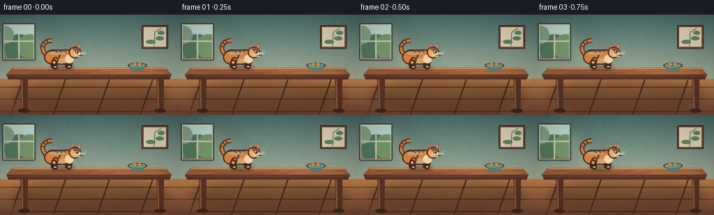
展开代码变化
--- 上一保存版本
+++ 本次保存版本
@@ -416,17 +416,17 @@
draw_ellipse(draw, foot[0], foot[1], 2.5 * SCALE, 1.7 * SCALE, (*rgb("#d7bd95"), 255), outline, ow)
# Torso and shoulder/haunch masses.
- body_p0, body_p1 = tp((-11, 0)), tp((10, 0))
- draw_capsule(draw, body_p0, body_p1, 10.0 * SCALE, orange, outline, ow)
- for cx, cy, rx, ry in [(-11, 0, 12.5, 10.5), (8, 1, 11.5, 9.5)]:
+ body_p0, body_p1 = tp((-12, 0)), tp((8, 0))
+ draw_capsule(draw, body_p0, body_p1, 9.2 * SCALE, orange, outline, ow)
+ for cx, cy, rx, ry in [(-12, 0, 11.7, 9.6), (7, 1, 9.8, 8.5)]:
pts = tpoints(ellipse_polygon(cx, cy, rx, ry, angle))
draw.polygon(pts, fill=orange)
draw.line(pts + [pts[0]], fill=outline, width=round(ow), joint="curve")
# Belly highlight and soft back light.
- belly = tpoints(ellipse_polygon(3, 6.0, 12.5, 4.4, angle))
+ belly = tpoints(ellipse_polygon(2, 5.5, 11.5, 3.8, angle))
draw.polygon(belly, fill=(*rgb("#e7a46a"), 205))
- back_light = tpoints(ellipse_polygon(-4, -6.5, 15.0, 3.2, angle))
+ back_light = tpoints(ellipse_polygon(-4, -6.2, 14.0, 2.9, angle))
draw.polygon(back_light, fill=(*rgb("#efac6a"), 145))
# Tabby stripes across the back.
@@ -444,73 +444,74 @@
draw_ellipse(draw, foot[0], foot[1], 2.8 * SCALE, 1.9 * SCALE, cream, outline, ow)
# Cream chest patch.
- chest = tpoints(ellipse_polygon(12.5, 3.5, 7.0, 7.2, angle))
+ neck = tpoints(ellipse_polygon(11.5, -1.5, 6.4, 7.2, angle))
+ draw.polygon(neck, fill=orange)
+ chest = tpoints(ellipse_polygon(12.0, 3.0, 6.2, 6.4, angle))
draw.polygon(chest, fill=cream)
# Ears behind the head.
+ hx, hy = 20.0, -6.2
for pts, inner_pts in [
- ([(-3.0, -13.0), (1.0, -22.0), (7.0, -12.0)], [(-0.5, -14.0), (1.7, -19.5), (4.8, -13.5)]),
- ([(5.0, -13.0), (10.0, -21.0), (14.0, -10.0)], [(7.0, -13.3), (10.0, -18.5), (12.2, -11.8)]),
+ (
+ [(hx - 6.7, hy - 4.8), (hx - 4.0, hy - 13.5), (hx + 0.5, hy - 6.2)],
+ [(hx - 5.5, hy - 5.6), (hx - 4.0, hy - 11.2), (hx - 1.0, hy - 6.5)],
+ ),
+ (
+ [(hx + 2.2, hy - 6.8), (hx + 7.1, hy - 14.1), (hx + 8.6, hy - 4.4)],
+ [(hx + 3.6, hy - 6.6), (hx + 6.9, hy - 11.8), (hx + 7.4, hy - 5.3)],
+ ),
]:
- ear_center = (18.0, -5.0)
- ear_world = []
- inner_world = []
- for ex, ey in pts:
- ear_world.append((ex + ear_center[0], ey + ear_center[1]))
- for ex, ey in inner_pts:
- inner_world.append((ex + ear_center[0], ey + ear_center[1]))
- draw.polygon(tpoints(ear_world), fill=orange, outline=outline)
- draw.polygon(tpoints(inner_world), fill=pink)
+ draw.polygon(tpoints(pts), fill=orange, outline=outline)
+ draw.polygon(tpoints(inner_pts), fill=pink)
# Head, muzzle, nose, eye, and whiskers.
- hx, hy = 18.0, -6.0
- head = tpoints(ellipse_polygon(hx, hy, 9.4, 8.7, angle))
+ head = tpoints(ellipse_polygon(hx, hy, 8.0, 7.7, angle))
draw.polygon(head, fill=orange_light)
draw.line(head + [head[0]], fill=outline, width=round(ow), joint="curve")
- muzzle = tpoints(ellipse_polygon(hx + 5.5, hy + 3.2, 6.2, 4.2, angle))
+ muzzle = tpoints(ellipse_polygon(hx + 4.6, hy + 2.6, 5.3, 3.7, angle))
draw.polygon(muzzle, fill=cream)
- cheek = tpoints(ellipse_polygon(hx + 1.5, hy + 3.0, 4.2, 4.0, angle))
+ cheek = tpoints(ellipse_polygon(hx + 1.2, hy + 2.7, 3.8, 3.5, angle))
draw.polygon(cheek, fill=(*rgb("#f3c889"), 220))
# Forehead stripes.
- for offset in (-2.0, 1.0, 4.0):
+ for offset in (-2.0, 0.5, 3.0):
pts = cubic_bezier(
- (hx + offset - 1.0, hy - 8.0),
- (hx + offset, hy - 5.2),
- (hx + offset + 0.8, hy - 3.8),
- (hx + offset + 1.6, hy - 2.5),
+ (hx + offset - 1.0, hy - 7.0),
+ (hx + offset, hy - 4.8),
+ (hx + offset + 0.7, hy - 3.5),
+ (hx + offset + 1.4, hy - 2.2),
8,
)
draw.line(tpoints(pts), fill=stripe, width=round(1.5 * SCALE), joint="curve")
- eye_c = tp((hx + 4.0, hy - 1.7))
+ eye_c = tp((hx + 3.2, hy - 1.3))
draw_ellipse(
- draw, eye_c[0], eye_c[1], 2.7 * SCALE, 3.0 * SCALE,
+ draw, eye_c[0], eye_c[1], 2.1 * SCALE, 2.5 * SCALE,
(*rgb("#c8d982"), 255), outline, 1.1 * SCALE, angle,
)
- pupil = tp((hx + 4.7, hy - 1.6))
- draw_ellipse(draw, pupil[0], pupil[1], 0.8 * SCALE, 2.4 * SCALE, (*rgb("#18211b"), 255), angle=angle)
- glint = tp((hx + 4.3, hy - 2.5))
- draw_ellipse(draw, glint[0], glint[1], 0.55 * SCALE, 0.65 * SCALE, (255, 255, 236, 255), angle=angle)
-
- nose = tpoints([(hx + 10.0, hy + 1.3), (hx + 12.4, hy + 2.3), (hx + 9.8, hy + 3.6)])
+ pupil = tp((hx + 3.8, hy - 1.2))
+ draw_ellipse(draw, pupil[0], pupil[1], 0.7 * SCALE, 2.0 * SCALE, (*rgb("#18211b"), 255), angle=angle)
+ glint = tp((hx + 3.4, hy - 2.0))
+ draw_ellipse(draw, glint[0], glint[1], 0.45 * SCALE, 0.55 * SCALE, (255, 255, 236, 255), angle=angle)
+
+ nose = tpoints([(hx + 8.0, hy + 1.1), (hx + 10.0, hy + 2.0), (hx + 7.8, hy + 3.1)])
draw.polygon(nose, fill=pink, outline=outline)
- draw.line(tpoints([(hx + 11.0, hy + 3.4), (hx + 11.0, hy + 5.0)]), fill=outline, width=round(0.9 * SCALE))
+ draw.line(tpoints([(hx + 8.8, hy + 2.9), (hx + 8.8, hy + 4.2)]), fill=outline, width=round(0.9 * SCALE))
draw.line(
- tpoints([(hx + 9.8, hy + 5.0), (hx + 7.0, hy + 5.8), (hx + 5.5, hy + 4.8)]),
+ tpoints([(hx + 8.0, hy + 4.2), (hx + 5.8, hy + 4.9), (hx + 4.6, hy + 4.0)]),
fill=outline,
width=round(0.9 * SCALE),
joint="curve",
)
draw.line(
- tpoints([(hx + 9.8, hy + 5.0), (hx + 12.0, hy + 6.0), (hx + 14.0, hy + 4.8)]),
+ tpoints([(hx + 8.0, hy + 4.2), (hx + 9.8, hy + 5.0), (hx + 11.6, hy + 4.0)]),
fill=outline,
width=round(0.9 * SCALE),
joint="curve",
)
- for dy in (-2.2, 1.0, 3.5):
+ for dy in (-1.7, 0.8, 3.0):
draw.line(
- tpoints([(hx + 10.5, hy + 2.5), (hx + 19.0, hy + dy)]),
+ tpoints([(hx + 8.7, hy + 2.2), (hx + 16.0, hy + dy)]),
fill=(*rgb("#f5e2bd"), 220),
width=round(0.65 * SCALE),
)
候选 03播放与检查图
点击播放 · 原生 RGB 像素
展开代码变化
--- 上一保存版本
+++ 本次保存版本
@@ -372,10 +372,10 @@
]
elif pose == "leap":
legs = [
- (-11, 4, -17, 9.0, "far", 0.0),
- (8, 4, 14, 8.0, "far", 0.0),
- (-8, 5, -12, 15.0, "near", 0.0),
- (11, 5, 16, 14.0, "near", 0.0),
+ (-11, 3, -17, 7.0, "far", 0.0),
+ (8, 3, 13, 8.0, "far", 0.0),
+ (-8, 4, -14, 11.0, "near", 0.0),
+ (11, 4, 15, 11.5, "near", 0.0),
]
elif pose == "land":
legs = [
@@ -541,8 +541,8 @@
step = index - 7
return (
[136.0, 146.0, 155.0, 164.0][step],
- [70.0, 83.0, 97.0, 110.5][step],
- [0.20, 0.24, 0.18, 0.10][step],
+ [71.0, 83.5, 96.0, 109.0][step],
+ [0.31, 0.39, 0.36, 0.25][step],
"leap",
0.8 + step * 0.9,
)
候选 04播放与检查图
点击播放 · 原生 RGB 像素

展开代码变化
代码未变化；重新保存了产物。
候选 05播放与检查图
点击播放 · 原生 RGB 像素

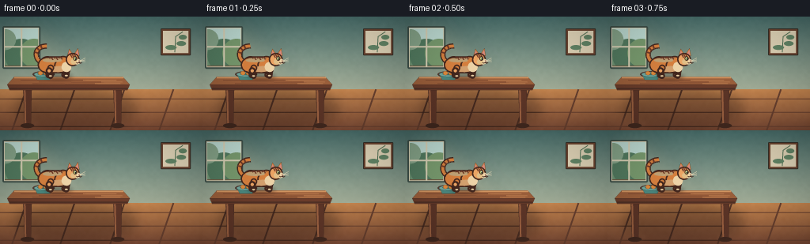
展开代码变化
--- 上一保存版本
+++ 本次保存版本
@@ -149,13 +149,13 @@
# Broad shadow beneath the table establishes depth.
under = Image.new("RGBA", (W, H), (0, 0, 0, 0))
ud = ImageDraw.Draw(under, "RGBA")
- ud.ellipse((18 * SCALE, 91 * SCALE, 242 * SCALE, 141 * SCALE), fill=(40, 23, 18, 90))
+ ud.ellipse((18 * SCALE, 91 * SCALE, 172 * SCALE, 141 * SCALE), fill=(40, 23, 18, 90))
under = under.filter(ImageFilter.GaussianBlur(8 * SCALE))
base = Image.alpha_composite(base, under)
draw = ImageDraw.Draw(base, "RGBA")
# Table legs are tapered and have a lit edge.
- for x0, x1 in [(29, 40), (224, 235)]:
+ for x0, x1 in [(29, 40), (143, 154)]:
draw.polygon(
[
(x0 * SCALE, 88 * SCALE),
@@ -180,8 +180,8 @@
draw.polygon(
[
(18 * SCALE, 76 * SCALE),
- (237 * SCALE, 76 * SCALE),
- (246 * SCALE, 86 * SCALE),
+ (155 * SCALE, 76 * SCALE),
+ (164 * SCALE, 86 * SCALE),
(9 * SCALE, 86 * SCALE),
],
fill=(*rgb("#9b5f3b"), 255),
@@ -190,20 +190,20 @@
draw.polygon(
[
(9 * SCALE, 86 * SCALE),
- (246 * SCALE, 86 * SCALE),
- (243 * SCALE, 93 * SCALE),
+ (164 * SCALE, 86 * SCALE),
+ (161 * SCALE, 93 * SCALE),
(12 * SCALE, 93 * SCALE),
],
fill=(*rgb("#6b3d2b"), 255),
outline=(*rgb("#3f281f"), 255),
)
draw.line(
- [(18 * SCALE, 77 * SCALE), (238 * SCALE, 77 * SCALE)],
+ [(18 * SCALE, 77 * SCALE), (156 * SCALE, 77 * SCALE)],
fill=(*rgb("#d29561"), 220),
width=2 * SCALE,
)
draw.line(
- [(12 * SCALE, 91 * SCALE), (243 * SCALE, 91 * SCALE)],
+ [(12 * SCALE, 91 * SCALE), (161 * SCALE, 91 * SCALE)],
fill=(*rgb("#4f3025"), 210),
width=2 * SCALE,
)
@@ -215,13 +215,13 @@
width=1 * SCALE,
)
draw.line(
- [((143 + offset) * SCALE, y * SCALE), ((225 + offset / 2) * SCALE, (y + 0.3) * SCALE)],
+ [((105 + offset) * SCALE, y * SCALE), ((147 + offset / 3) * SCALE, (y + 0.3) * SCALE)],
fill=(*rgb("#c08152"), 70),
width=1 * SCALE,
)
# Ceramic bowl on the far side of the table.
- bx, by = 197, 72
+ bx, by = 55, 72
draw.ellipse(
((bx - 14) * SCALE, (by - 3) * SCALE, (bx + 14) * SCALE, (by + 5) * SCALE),
fill=(*rgb("#543b32"), 95),
@@ -532,25 +532,25 @@
def cat_state(index: int):
if index <= 3:
- x = [87.5, 88.2, 89.0, 92.5][index]
+ x = [72.0, 72.8, 73.6, 77.0][index]
return x, 61.0, -0.02, "idle", 0.6 + index * 0.65
if index <= 6:
step = index - 4
- return [104.0, 115.0, 126.0][step], [62.0, 61.2, 62.0][step], 0.03, "run", 0.4 + step * 1.55
+ return [86.0, 95.0, 104.0][step], [62.0, 61.2, 62.0][step], 0.03, "run", 0.4 + step * 1.55
if index <= 10:
step = index - 7
return (
- [136.0, 146.0, 155.0, 164.0][step],
+ [114.0, 125.0, 136.0, 147.0][step],
[71.0, 83.5, 96.0, 109.0][step],
[0.31, 0.39, 0.36, 0.25][step],
"leap",
0.8 + step * 0.9,
)
if index == 11:
- return 172.0, 121.0, 0.02, "land", 1.8
+ return 154.0, 121.0, 0.02, "land", 1.8
step = index - 12
return (
- 181.0 + step * 4.55,
+ 162.0 + step * 4.4,
122.4 + 0.9 * math.sin(step * 1.35),
0.0,
"run",
可观测工具轨迹
实际执行的命令与返回图片。
命令 1exit 0
/bin/bash -c "pwd && rg --files -g '"'!*.mp4'"' -g '"'!*.webm'"' -g '"'!*.mov'"' | sort | sed -n '1,200p'"
命令 2exit 0
/bin/bash -c "sed -n '1,240p' prompt.txt"
命令 3exit 0
/bin/bash -c "sed -n '1,280p' GENERATION_RULES.md"
命令 4exit 0
/bin/bash -c 'cat task_spec.json'
命令 5exit 1
/bin/bash -c "find . -maxdepth 2 -type f -printf '%p\\n' | sort | sed -n '1,240p'; printf '\\nTOOLS\\n'; command -v ffmpeg; command -v python3; command -v node; command -v blender; command -v chromium; command -v google-chrome; command -v convert"
命令 6exit 0
/bin/bash -c "sed -n '1,260p' artifact_io.py"
命令 7exit 0
/bin/bash -c "sed -n '1,260p' player_template.html"
命令 8exit 0
/bin/bash -c "python3 - <<'PY' import importlib.util for n in ['numpy','PIL','cv2','imageio','scipy']: print(n, bool(importlib.util.find_spec(n))) PY"
命令 9exit 1
/bin/bash -c 'python3 generate.py'
命令 10exit 0
/bin/bash -c 'rg -n "ellipse_polygon" generate.py'
命令 11exit 0
/bin/bash -c 'python3 generate.py'
命令 12exit 0
/bin/bash -c "python3 - <<'PY'
from PIL import Image, ImageDraw
from pathlib import Path
frames=[0,3,4,5,6,7,8,9,10,11,15,19]
ims=[Image.open(f'frames/{i:02d}.png').convert('RGB').resize((512,288), Image.Resampling.NEAREST) for i in frames]
out=Image.new('RGB',(512*3,(288+22)*4),(25,28,35)); d=ImageDraw.Draw(out)
for k,(i,im) in enumerate(zip(frames,ims)):
x=(k%3)*512;y=(k//3)*(288+22);d.text((x+6,y+4),f'frame {i:02d}',fill='white');out.paste(im,(x,y+22))
out.save('detail_check.png')
PY"命令 13exit 0
/bin/bash -c 'mkdir -p candidates/v1 && cp -a frames pixels.npz inspection.png transition_check.png detail_check.png index.html video.mp4 prompt.txt task_spec.json candidates/v1/'
命令 14exit 0
/bin/bash -c "python3 - <<'PY'
import cv2, numpy as np
for i in range(20):
f=cv2.imread(f'frames/{i:02d}.png')
print(i, f.shape, int(f.min()), int(f.max()), round(float(f.mean()),2))
PY"命令 15exit 0
/bin/bash -c 'ffprobe -v error -show_entries stream=width,height,nb_frames,r_frame_rate,pix_fmt -show_entries format=duration,size -of default=noprint_wrappers=1 video.mp4 2>&1 || true'
命令 16exit 0
/bin/bash -c 'python3 generate.py'
命令 17exit 0
/bin/bash -c 'mkdir -p candidates/v2 && cp -a frames pixels.npz inspection.png transition_check.png index.html video.mp4 prompt.txt task_spec.json candidates/v2/'
命令 18exit 0
/bin/bash -c 'python3 generate.py'
命令 19exit 0
/bin/bash -c "rg -n \"237|246|243|235|224|225|197|203|221|226|242|18 \\* SCALE, 91|18 \\* SCALE, 76|143 \\+|225 \\+|cat_state|\\[136|\\[71|\\[70|\\[83|\\[97|\\[110\" generate.py"
命令 20exit 0
/bin/bash -c "sed -n '145,230p' generate.py; sed -n '525,575p' generate.py"
命令 21exit 0
/bin/bash -c 'python3 generate.py'
命令 22exit 0
/bin/bash -c "python3 - <<'PY'
from pathlib import Path
import hashlib, json
import cv2
import numpy as np
from PIL import Image
root = Path('.')
spec = json.loads((root/'task_spec.json').read_text())
frames = sorted((root/'frames').glob('*.png'))
assert len(frames) == spec['frames'] == 20
arrs = [np.asarray(Image.open(p).convert('RGB')) for p in frames]
assert all(a.shape == (spec['height'], spec['width'], 3) and a.dtype == np.uint8 for a in arrs)
assert all(np.array_equal(arrs[i], arrs[i-1]) is False for i in range(1, len(arrs)))
packed = np.load(root/'pixels.npz')['pixels']
assert packed.shape == (spec['height'], spec['width'], spec['frames'])
assert (root/'generate.py').is_file() and (root/'index.html').is_file()
cap = cv2.VideoCapture(str(root/'video.mp4'))
count = int(cap.get(cv2.CAP_PROP_FRAME_COUNT))
fps = cap.get(cv2.CAP_PROP_FPS)
vw = int(cap.get(cv2.CAP_PROP_FRAME_WIDTH)); vh = int(cap.get(cv2.CAP_PROP_FRAME_HEIGHT))
cap.release()
print('frames', len(frames), 'shape', arrs[0].shape, 'npz', packed.shape)
print('mp4', count, 'frames', f'{vw}x{vh}', f'{fps:.3f} fps')
print('mean luma first/last', round(float(arrs[0].mean()), 2), round(float(arrs[-1].mean()), 2))
print('artifact_sha256', hashlib.sha256((root/'pixels.npz').read_bytes()).hexdigest())
PY"命令 23exit 0
/bin/bash -c "python3 - <<'PY'
from pathlib import Path
import shutil
root=Path('.')
dst=root/'candidates/v3'
dst.mkdir(parents=True, exist_ok=True)
for name in ['frames','pixels.npz','inspection.png','transition_check.png','index.html','video.mp4','prompt.txt','task_spec.json','generate.py']:
src=root/name; out=dst/name
if src.is_dir():
shutil.copytree(src,out,dirs_exist_ok=True)
else:
shutil.copy2(src,out)
print('archived', dst)
PY"命令 24exit 0
/bin/bash -c 'python3 -m py_compile generate.py && tmpdir=$(mktemp -d .tmp/regen.XXXXXX) && cp generate.py artifact_io.py player_template.html prompt.txt task_spec.json "$tmpdir" && cd "$tmpdir" && python3 generate.py && python3 - <<'"'PY'
from PIL import Image
import numpy as np
from pathlib import Path
here=Path.cwd()
a=np.asarray(Image.open(here/'frames/09.png'))
b=np.asarray(Image.open('./frames/09.png'))
print('fresh regeneration matches:', np.array_equal(a,b))
print('temp artifacts:', sorted(p.name for p in here.iterdir()))
PY"命令 25exit 0
/bin/bash -c "git status --short 2>/dev/null || true; printf '\\nOUTPUTS\\n'; find . -maxdepth 2 -type f \\( -name 'pixels.npz' -o -name 'video.mp4' -o -name 'index.html' -o -name 'inspection.png' -o -name 'generate.py' \\) -printf '%p %s bytes\\n' | sort"
视觉工具实际返回图片 1
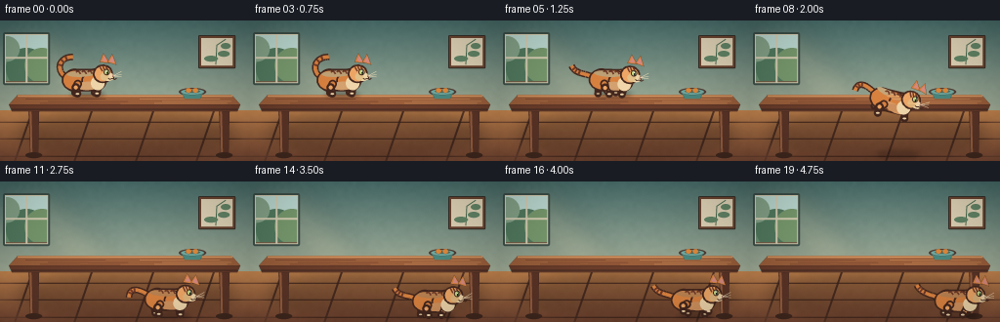
视觉工具实际返回图片 2
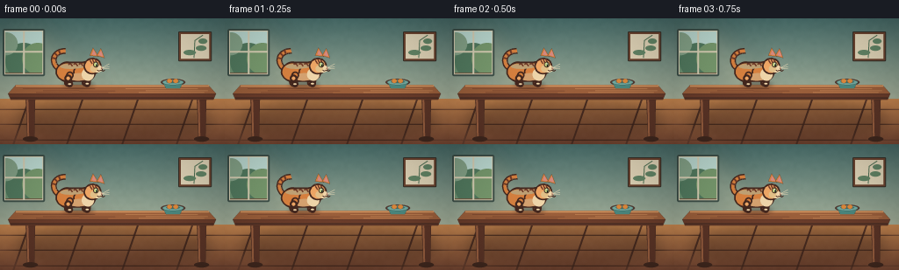
视觉工具实际返回图片 3
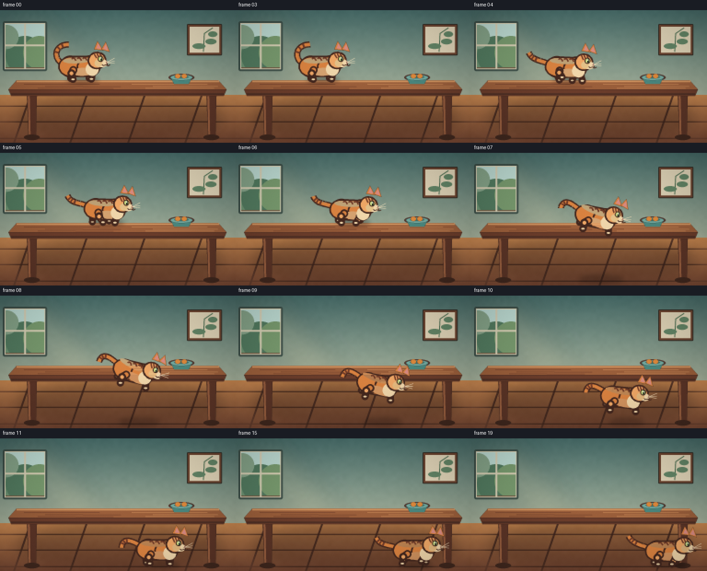
视觉工具实际返回图片 4
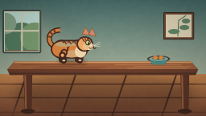
视觉工具实际返回图片 5
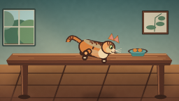
视觉工具实际返回图片 6
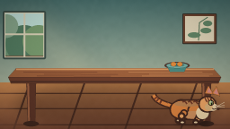
视觉工具实际返回图片 7

视觉工具实际返回图片 8
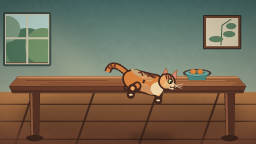
视觉工具实际返回图片 9
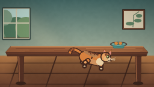
视觉工具实际返回图片 10
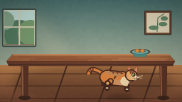
视觉工具实际返回图片 11
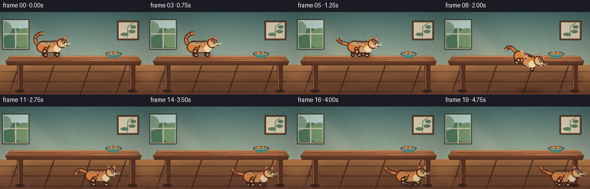
视觉工具实际返回图片 12
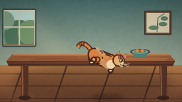
视觉工具实际返回图片 13
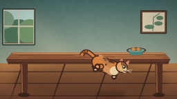
视觉工具实际返回图片 14
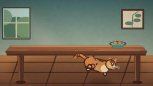
视觉工具实际返回图片 15
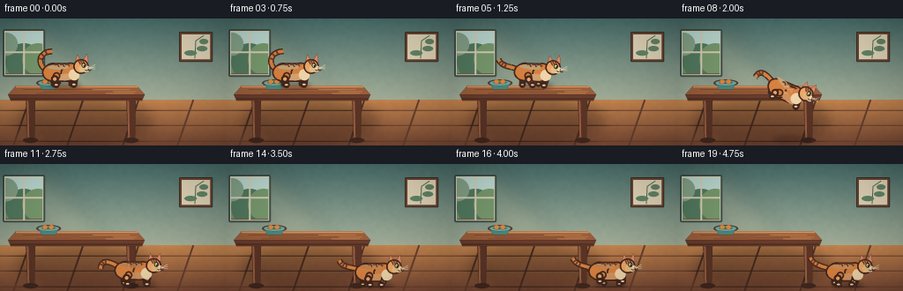
视觉工具实际返回图片 16
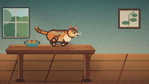
视觉工具实际返回图片 17
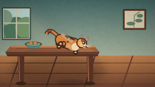
视觉工具实际返回图片 18
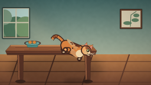
视觉工具实际返回图片 19
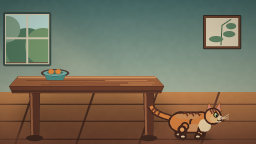
保存候选 5 份；完成命令 25 次；可验证图片返回 19 张。原始 API 响应与完整日志保留在本地。